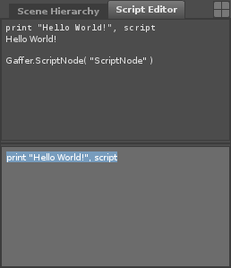
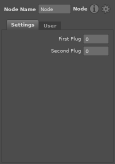
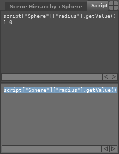
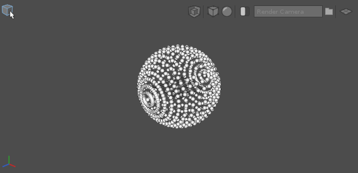
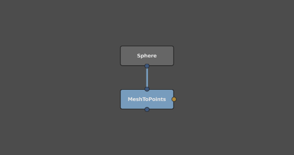
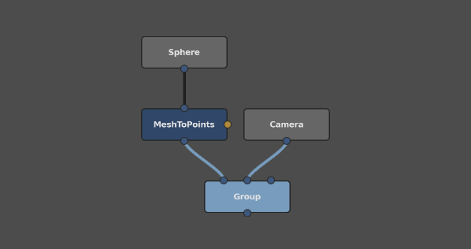

Getting Started¶
Gaffer’s Python scripting API is fairly frugal, so learning a few fundamental concepts goes a long way. Here we’ll take a quick tour through these fundamentals using Gaffer’s ScriptEditor. We’ll see how we can enter Python code within the ScriptEditor to create nodes and plugs, and edit their values and connections. We’ll also see how we can use drag and drop to conveniently enter text into the ScriptEditor itself.
The ScriptEditor¶
After launching Gaffer, the ScriptEditor can be found in its default location on a tab in the bottom right of the main window.

The editor is broken into two sections. The bottom field is for entering python commands, and this functions much like any other basic text editor. We’ll get started right away by entering the text print "Hello World!", script. We can then execute the code by pressing Ctrl+Enter.
The top field displays output from any commands executed, so we should see the greeting we printed along with the mysterious script variable that we printed with it. The script variable references the root node of a Gaffer file, and is our gateway to further exploration.
Tip
Small portions of the text input may be executed individually and kept around for later editing by selecting them before hitting Ctrl+Enter. When there is no selection Ctrl+Enter executes everything and clears the contents of the input field, but the commands can always be retrieved later by cutting and pasting them from the output field.
Nodes and plugs¶
The most important classes in the Gaffer API are the Nodes and Plugs which are connected together to make up a dependency graph. These are parented together in a hierarchy which nicely maps to python’s dictionary syntax. Plugs may be parented to nodes using Python’s familiar dictionary notation :
node = Gaffer.Node()
node["firstPlug"] = Gaffer.IntPlug()
node["secondPlug"] = Gaffer.FloatPlug()
If you follow along by entering the code above in the ScriptEditor, you may wonder why our newly created node hasn’t appeared in the NodeEditor or NodeGraph. This is because we haven’t given it a parent yet, so it is not associated with any script. Let’s add it to the script root, and select it so that it appears in the NodeEditor :
script.addChild( node )
script.selection().clear()
script.selection().add( node )

It appeared! Exciting stuff! Nodes have a variety of methods to manipulate them after construction, so let’s celebrate by using one of them to rename the node :
node.setName( "MyMostAwesomeNode" )
Tip
You may be wondering why we used dictionary syntax to parent the plugs into the node, but
we used the addChild() method to parent the node to the script. We could actually have used
either, but the addChild() method takes care of automatically renaming the child if it would
clash with an existing node in the script. If we used the dictionary syntax we would have been
replacing any existing node of the same name, which is often not what we want.
Editing plug values¶
Our humble node doesn’t do anything particularly interesting, so let’s create one that can actually generate a scene. Each node type in Gaffer is a different class in Python, and lives inside a module specific to the sort of processing it performs (a full list of modules and the nodes they provide is available in the Node Reference).
For now we’ll go ahead and make a Sphere :
import GafferScene
script.addChild( GafferScene.Sphere() )
This time we’ve added the node directly to the script without assigning it to a variable, so we don’t yet have a convenient handle for the node. Fear not, we can always get an appropriate reference to a node by Middle Dragging it from the NodeGraph and into the ScriptEditor. As you might guess, this gives us the familiar dictionary syntax of script["Sphere"]. We can do the same for plugs by Left Dragging them from the NodeEditor. Get the plug for controlling the radius by dragging the “Radius” label from the NodeEditor, to insert the text script["Sphere"]["radius"].
Plugs are Python classes in the same way that nodes are, and have additional methods we can use for editing them. The getValue() method returns the current value of a plug, so we can use it to learn that the sphere has a radius of 1 :

As you might have guessed, we can change the value using a matching setValue() method. Let’s go ahead and set the values for a couple of the simplest plugs to demonstrate how this works :
script["Sphere"]["radius"].setValue( 10.5 )
script["Sphere"]["name"].setValue( "mySphere" )
In the same way that nodes can have child plugs, plugs themselves can have children, and they are accessed using exactly the same dictionary syntax. Gaffer makes use of plugs nested in this way to represent more complex values, such as the xyz translate, rotate and scale of the sphere. This means we can either set the plugs individually, or set several at a time using the setValue() method on the parent plug :
# Setting leaf plugs individually
script["Sphere"]["transform"]["translate"]["x"].setValue( 1 )
script["Sphere"]["transform"]["translate"]["y"].setValue( 2 )
script["Sphere"]["transform"]["translate"]["z"].setValue( 3 )
# Setting them all in one shot
script["Sphere"]["transform"]["translate"].setValue( IECore.V3f( 1, 2, 3 ) )
Tip
The second form is often more convenient because it is shorter, and because the V3f class
provides lots of useful functionality for doing maths with vector values. As a newcomer to Gaffer
though, it’s unlikely that we could have guessed the right syntax. Here drag and drop comes to our
rescue again - Shift+Left Dragging the plug label from the NodeEditor and into the ScriptEditor
will enter the code for current value of the plug, providing a convenient syntax reference.
Making connections¶
As well as having values, plugs can be connected together so that values flow from one to another. We’ll use the ScriptEditor to create a small node network to demonstrate this.
meshToPoints = GafferScene.MeshToPoints()
meshToPoints["in"].setInput( script["Sphere"]["out"] )
meshToPoints["type"].setValue( "sphere" )
script.addChild( meshToPoints )
As before, meshToPoints["in"] refers to a plug that is the child of a node, but instead of setting its value with the setValue() method, this time we have given it an input connection with the setInput() method.
 
Now, let’s create a Camera and group it with our funky sphere thing, so that we have the beginnings of a scene we could render.
camera = GafferScene.Camera()
script.addChild( camera )
group = GafferScene.Group()
script.addChild( group )
# Note the use of list syntax
group["in"][0].setInput( meshToPoints["out"] )
group["in"][1].setInput( camera["out"] )
Until now, we’ve been accessing plugs and nodes by name, using Python’s dictionary syntax. In the code snippet above you can see that we can also access children using Python’s list syntax, and for the Group node this is particularly convenient. The Group can have any number of inputs, so the group["in"] plug behaves like an array, and we can access its first child with group["in"][0] and it’s second child with group["in"][1], and so on.

Tip
The fact that some plugs are visible only in the NodeEditor and some plugs are visible only in the NodeGraph might give the false impression that only the plugs in the NodeGraph can be connected. In fact, this is not the case, and as a general rule almost any plug can be given an input connection.
Recap¶
We’ve seen that Gaffer’s node graphs can be constructed using a minimal set of scripting commands, and that the ScriptEditor makes experimenting with these commands relatively easy by allowing nodes and plugs to be dragged and dropped directly into the code. The Scripting Reference and ScriptEditor Reference sections provide a useful reminder of all we’ve covered in this tutorial, and additional information useful for further exploration.
Tip
Gaffer’s .gfr files are simply Python scripts which contain all the code necessary to reconstruct the saved node network. If you’re ever struggling to find a way of scripting something in the documentation, it can be handy to construct a network by hand and then open the .gfr file in a text editor for use as a cheat sheet. Similarly, you can use Ctrl+C to copy a network from the NodeGraph, and paste it as code into the ScriptEditor with Ctrl+V.
Finally, since Gaffer is open source, you’ll often find inspiration and examples in the source code itself.